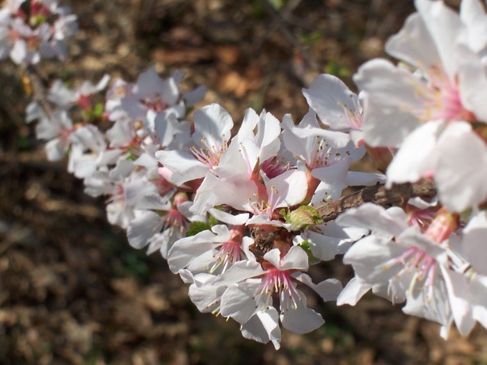
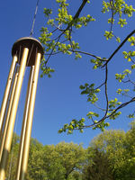
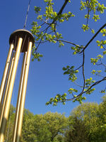

Next Photo
-
Vote
Pink Flowers and Brown
A long branch of pink and white blooms gives the great feeling of spring. The pink and brown of the flowers contrasts the brown of the earth below. The depth of this photo also makes it quite appealing. This is one of my favorites to use as my desktop wallpaper. The light playign on the petals of the white and pink flowers adds another level to this photo. As the branch extends out of the photo, it appears to continue on forever.
More...
ID: 6
Title: Pink Flowers and Brown
Description: A long branch of pink and white blooms gives the great feeling of spring. The pink and brown of the flowers contrasts the brown of the earth below. The depth of this photo also makes it quite appealing. This is one of my favorites to use as my desktop wallpaper. The light playign on the petals of the white and pink flowers adds another level to this photo. As the branch extends out of the photo, it appears to continue on forever.
Keywords: pink brown white flowers depth of field branch macro dainty
Hidden: n
Date added: 2010-09-19 04:19:43 UTC
Date taken: 2004-04-03 14:24:56 UTC
Camera: EASTMAN KODAK COMPANY.KODAK CX6330 ZOOM DIGITAL CAMERA.
Resolution: 2032x1524
Mode:
Shutter speed: 75/10
Flash: 16
Exposure time: 1/180
Iso:
Metering: 5
Aperture: 65/10
Focal length: 168/10
Artist: NathanielGuy Mahieu
Copyright: 2006 NathanielGuy Mahieu
Views: 18756

 
